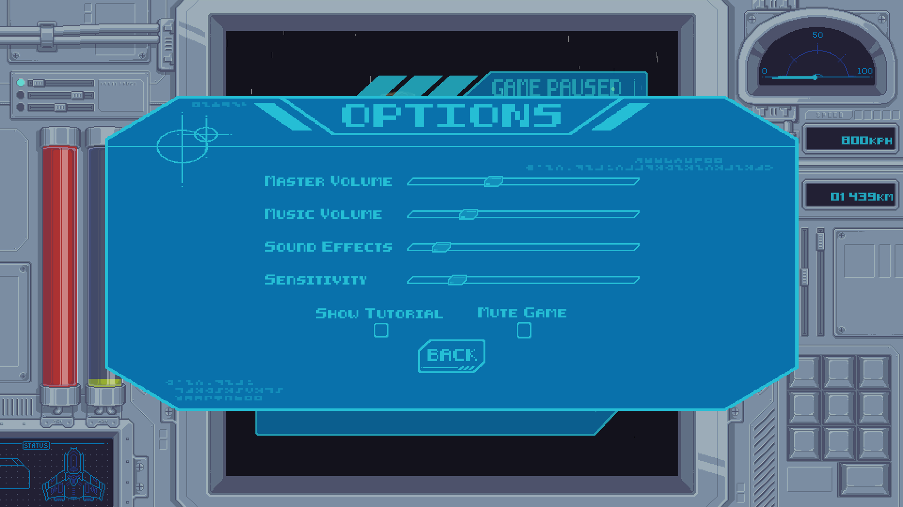

Project Overview
This game was conceived as a fast-paced, speed-centric space shooter. we designed the player's stats and abilities around this central concept. The player collects energy from either a limited trickle of independently generated pellets, or by destroying asteroids. With this energy, the player is able to charge and fire shots. As they charge, they increase their hit box temporarily and their speed permanently. When the player has maxed out their energy and speed values, they can right click to charge a boost. Temporarily increasing their speed greatly and granting them invulnerability. When the loop ends their speed is permanently slightly increased, and the gameplay loop restarts. The game also features a very polished Diegetic UI. All of the player stats are presented through the flavor of a ship's control console, with the gameplay being displayed on the console's screen. The pause and options menus are presented as holographic popups, and the end game is flavored as an error screen.
We'd started as a team of 3 programmers and one producer, later recruiting an artist, and three composers/audio engineers. I'd initially joined the team solely as a programmer. but as time went on, our producer, Ryan Dunagan, became less available. I stepped up to help him out with the day-to day project management, and eventually became a producer myself before he had to step away from the project entirely. While we still followed his previous guidance on the direction of our game concept and the workflows he taught us, I became the one to oversee those workflows. Setting weekly sprints, planning/delegating tasks, and monitoring any obstacles that might stall our progress. I balanced these responsibilities while still keeping up with my role as a programmer. I enjoyed the project management, but I was still passionate about the technical details of the game. This actually turned out to be highly beneficial. As my technical involvement was essential towards understanding and therefore managing the progress we were making. As well as managing the organization of our git repository and communicating with the other programmers the complexity of our workflow and tools. This balance was also incredibly useful when resolving technical issues. Which required not just technical knowledge, but also a broad understanding of the full picture.
The Stats surrounding how the player charged and used their energy were prototyped through parameterized values and Unity's ScriptableObject system.
The entity generation systems had their own set of parameterized values, which allowed us to identify how best to simplify the systems later on.

The Diegetic UI was one of the most exciting aspects to emerge from our brainstorming. the console HUD and in-game presentation of the loss, pause, and options menus gave the game a unique flavor that everyone on the team was very proud of.
Journal Entry: Prototyping & Technical Systems
While no one technical system stands out among my work on Star Charger, each and every aspect of the project has deepened my understanding of both Unity and game development best practices. In particular I enjoyed and learned the most from protoptyping the gameplay mechanics and managing the Git repository.
The initial concept for our game had mostly do with the movement of the character, with only basic details planned for the energy mechanics and movement of the asteroids. This resulted in significant potential (but also necessity) to explore what exactly each of those mechanics would look like. I know that predicting how fun an idea is can be unreliable without seeing it firsthand. So I wanted to establish a foundation to see our ideas in action. However, I also wanted us to be able to easily revisit, explore, and iterate on our ideas. A common strategy I used was to frequently parameterize values important to the gameplay, this allowed us to quickly change (or even temporarily remove) a mechanic without having to rewrite or even recompile our code.
The entity generation systems that handle asteroids and energy were one of the first ones we built, but we kept iterating on them through much of development. By parameterizing the values, we were able to assign different speeds, directions, and frequencies for every entity. The asteroids were also given individual values for health, size, and energy amounts, all of which were correlated. We were also able to assign randomized ranges for the values. Trying to sort through this complex system through code alone would have been untenable, even with our technical expertise. But because all of these variables were accessible through the editor, we were easily able to identify the most important values - minimizing or completely nullifying the ones that were unimpactful or frustrating. All of the entities that were spawned were also handled through Unity's object pooling system to minimize the performance costs of repeatedly destroying and reinstancing entities.
With the player energy and speed mechanics specifically, I also utilized Unity's ScriptableObject system. By building various templates and through simple inheritance structures, we could not only quickly swap out various configurations, but even store them on hand for future revisits. This allowed us to move on from an idea without abandoning it altogether. On reflection, the systems that we ended up settling on were rather complicated and hard for players to understand. But the protype infrastructure that we put in place allows us to at least know the mechanics are satisfying once understood, and will make it much easier if we decide to rework the system in the future. Most importantly, now that I more thoroughly understand the process, I'll be better able to prioritize the most important aspects. Meaning the next project I work on will be much more streamlined from both a player and developer perspective.
Source Control was also an essential tool for both our productivity, and one I became very familiar with. Even if I hadn't been the producer on this project, I'm sure I still would've been heavily involved and invested in the management and organization of our git repository because I do earnestly find it a fascinating tool to learn how to use effectively. It's just incredibly gratifying to learn how to integrating the disparate systems each developer produces, and even explore different iterations of them. I learned how to use it for both the projects technical functionality and collaborative workflow. Anticipating issues before they came up, resolving the ones that did, and facilitating the integration of everyone's work. Managing all of this also provided me a wide understanding of all of our game systems, which was invaluable for debugging and design feedback. Any time a teammate ran into an issue or had a question, I was able to tell them exactly where to start looking for the related functionality.